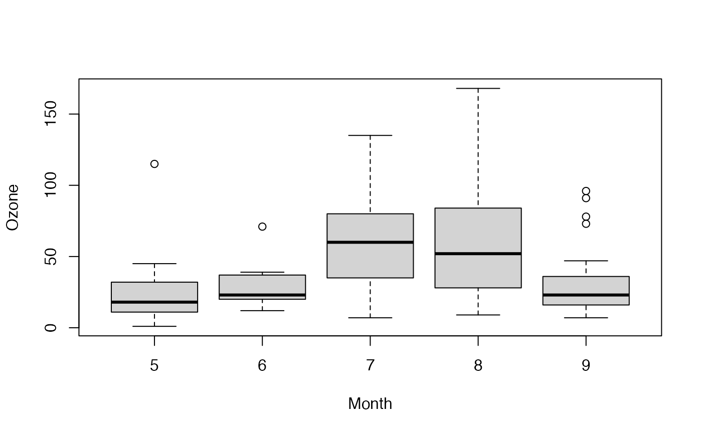

NemenyiTest.RdPerforms Nemenyi's test of multiple comparisons.
NemenyiTest(x, ...)
# S3 method for default
NemenyiTest(x, g, dist = c("tukey", "chisq"), out.list = TRUE, ...)
# S3 method for formula
NemenyiTest(formula, data, subset, na.action, ...)a numeric vector of data values, or a list of numeric data vectors.
a vector or factor object giving the group for the
corresponding elements of x. Ignored if x is a
list.
the distribution used for the test. Can be tukey (default) or chisq.
logical, defining if the output should be organized in listform.
a formula of the form lhs ~ rhs where lhs
gives the data values and rhs the corresponding groups.
an optional matrix or data frame (or similar: see
model.frame) containing the variables in the
formula formula. By default the variables are taken from
environment(formula).
an optional vector specifying a subset of observations to be used.
a function which indicates what should happen when
the data contain NAs. Defaults to
getOption("na.action").
further arguments to be passed to or from methods.
Nemenyi proposed a test based on rank sums and the application of the family-wise error method to control Type I error inflation, if multiple comparisons are done. The Tukey and Kramer approach uses mean rank sums and can be employed for equally as well as unequally sized samples without ties.
A list of class htest, containing the following components:
Nemenyi test
the p-value for the test
is the value of the median specified by the null hypothesis. This
equals the input argument mu.
a character string describing the alternative hypothesis.
the type of test applied
a character string giving the names of the data.
Nemenyi, P. B. (1963) Distribution-Free Multiple Comparisons New York, State University of New York, Downstate Medical Center
Hollander, M., Wolfe, D.A. (1999) Nonparametric Statistical Methods New York, Wiley, pp. 787
Friedman, M. (1937) The use of ranks to avoid the assumption of normality implicit in the analysis of variance Journal of the American Statistical Association, 32:675-701
Friedman, M. (1940) A comparison of alternative tests of significance for the problem of m rankings Annals of Mathematical Statistics, 11:86-92
## Hollander & Wolfe (1973), 116.
## Mucociliary efficiency from the rate of removal of dust in normal
## subjects, subjects with obstructive airway disease, and subjects
## with asbestosis.
x <- c(2.9, 3.0, 2.5, 2.6, 3.2) # normal subjects
y <- c(3.8, 2.7, 4.0, 2.4) # with obstructive airway disease
z <- c(2.8, 3.4, 3.7, 2.2, 2.0) # with asbestosis
NemenyiTest(list(x, y, z))
#>
#> Nemenyi's test of multiple comparisons for independent samples (tukey)
#>
#> mean.rank.diff pval
#> 2-1 1.8 0.7972
#> 3-1 -0.6 0.9720
#> 3-2 -2.4 0.6686
#> ---
#> Signif. codes: 0 '***' 0.001 '**' 0.01 '*' 0.05 '.' 0.1 ' ' 1
#>
## Equivalently,
x <- c(x, y, z)
g <- factor(rep(1:3, c(5, 4, 5)),
labels = c("Normal subjects",
"Subjects with obstructive airway disease",
"Subjects with asbestosis"))
NemenyiTest(x, g)
#>
#> Nemenyi's test of multiple comparisons for independent samples (tukey)
#>
#> mean.rank.diff
#> Subjects with obstructive airway disease-Normal subjects 1.8
#> Subjects with asbestosis-Normal subjects -0.6
#> Subjects with asbestosis-Subjects with obstructive airway disease -2.4
#> pval
#> Subjects with obstructive airway disease-Normal subjects 0.7972
#> Subjects with asbestosis-Normal subjects 0.9720
#> Subjects with asbestosis-Subjects with obstructive airway disease 0.6686
#> ---
#> Signif. codes: 0 '***' 0.001 '**' 0.01 '*' 0.05 '.' 0.1 ' ' 1
#>
## Formula interface.
boxplot(Ozone ~ Month, data = airquality)

NemenyiTest(Ozone ~ Month, data = airquality)
#>
#> Nemenyi's test of multiple comparisons for independent samples (tukey)
#>
#> mean.rank.diff pval
#> 6-5 12.02991453 0.88737
#> 7-5 41.21153846 0.000097 ***
#> 8-5 38.53846154 0.00035 ***
#> 9-5 11.99734748 0.67819
#> 7-6 29.18162393 0.16373
#> 8-6 26.50854701 0.24773
#> 9-6 -0.03256705 1.00000
#> 8-7 -2.67307692 0.99853
#> 9-7 -29.21419098 0.01136 *
#> 9-8 -26.54111406 0.02867 *
#> ---
#> Signif. codes: 0 '***' 0.001 '**' 0.01 '*' 0.05 '.' 0.1 ' ' 1
#>
# Hedderich & Sachs, 2012, p. 555
d.frm <- data.frame(x=c(28,30,33,35,38,41, 36,39,40,43,45,50, 44,45,47,49,53,54),
g=c(rep(LETTERS[1:3], each=6)), stringsAsFactors=TRUE)
NemenyiTest(x~g, d.frm)
#>
#> Nemenyi's test of multiple comparisons for independent samples (tukey)
#>
#> mean.rank.diff pval
#> B-A 5.583333 0.1658
#> C-A 10.416667 0.0021 **
#> C-B 4.833333 0.2595
#> ---
#> Signif. codes: 0 '***' 0.001 '**' 0.01 '*' 0.05 '.' 0.1 ' ' 1
#>